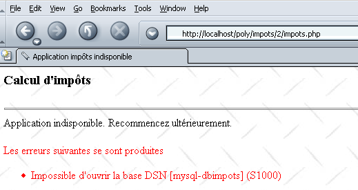

4. Exemples
4.1. Application Impôts : Introduction
Nous introduisons ici l'application IMPOTS qui sera utilisée à de nombreuses reprises par la suite. Il s'agit d'une application permettant de calculer l'impôt d'un contribuable. On se place dans le cas simplifié d'un contribuable n'ayant que son seul salaire à déclarer :
- on calcule le nombre de parts du salarié nbParts=nbEnfants/2 +1 s'il n'est pas marié, nbEnfants/2+2 s'il est marié, où nbEnfants est son nombre d'enfants.
- s'il a au moins trois enfants, il a une demi-part de plus
- on calcule son revenu imposable R=0.72*S où S est son salaire annuel
- on calcule son coefficient familial QF=R/nbParts
- on calcule son impôt I. Considérons le tableau suivant :
12620.0 | 0 | 0 |
13190 | 0.05 | 631 |
15640 | 0.1 | 1290.5 |
24740 | 0.15 | 2072.5 |
31810 | 0.2 | 3309.5 |
39970 | 0.25 | 4900 |
48360 | 0.3 | 6898.5 |
55790 | 0.35 | 9316.5 |
92970 | 0.4 | 12106 |
127860 | 0.45 | 16754.5 |
151250 | 0.50 | 23147.5 |
172040 | 0.55 | 30710 |
195000 | 0.60 | 39312 |
0 | 0.65 | 49062 |
Chaque ligne a 3 champs. Pour calculer l'impôt I, on recherche la première ligne où QF<=champ1. Par exemple, si QF=23000 on trouvera la ligne
L'impôt I est alors égal à 0.15*R - 2072.5*nbParts. Si QF est tel que la relation QF<=champ1 n'est jamais vérifiée, alors ce sont les coefficients de la dernière ligne qui sont utilisés. Ici :
ce qui donne l'impôt I=0.65*R - 49062*nbParts.
Les données définissant les différentes tranches d'impôt sont dans une base de données ODBC-MySQL. MySQL est un SGBD du domaine public utilisable sur différentes plate-formes dont Windows et Linux. Avec ce SGBD, une base de données dbimpots a été créée avec dedans une unique table appelée impots. L'accès à la base est contrôlé par un login/motdepasse ici admimpots/mdpimpots. La copie d'écran suivante montre comment utiliser la base dbimpots avec MySQL :
C:\Program Files\EasyPHP\mysql\bin>mysql -u admimpots -p
Enter password: *********
Welcome to the MySQL monitor. Commands end with ; or \g.
Your MySQL connection id is 18 to server version: 3.23.49-max-nt
Type 'help;' or '\h' for help. Type '\c' to clear the buffer.
mysql> use dbimpots;
Database changed
mysql> show tables;
+--------------------+
| Tables_in_dbimpots |
+--------------------+
| impots |
+--------------------+
1 row in set (0.00 sec)
mysql> describe impots;
+---------+--------+------+-----+---------+-------+
| Field | Type | Null | Key | Default | Extra |
+---------+--------+------+-----+---------+-------+
| limites | double | YES | | NULL | |
| coeffR | double | YES | | NULL | |
| coeffN | double | YES | | NULL | |
+---------+--------+------+-----+---------+-------+
3 rows in set (0.02 sec)
mysql> select * from impots;
+---------+--------+---------+
| limites | coeffR | coeffN |
+---------+--------+---------+
| 12620 | 0 | 0 |
| 13190 | 0.05 | 631 |
| 15640 | 0.1 | 1290.5 |
| 24740 | 0.15 | 2072.5 |
| 31810 | 0.2 | 3309.5 |
| 39970 | 0.25 | 4900 |
| 48360 | 0.3 | 6898 |
| 55790 | 0.35 | 9316.5 |
| 92970 | 0.4 | 12106 |
| 127860 | 0.45 | 16754 |
| 151250 | 0.5 | 23147.5 |
| 172040 | 0.55 | 30710 |
| 195000 | 0.6 | 39312 |
| 0 | 0.65 | 49062 |
+---------+--------+---------+
14 rows in set (0.00 sec)
mysql>quit
La base de données dbimpots est transformée en source de données ODBC de la façon suivante :
- on lance le gestionnaire des sources de données ODBC 32 bits

- on utilise le bouton [Add] pour ajouter une nouvelle source de données ODBC

- on désigne le pilote MySQL et on fait [Terminer]
 |
- le pilote MySQL demande un certain nombre de renseignements :
1 | le nom DSN à donner à la source de données ODBC - peut-être quelconque |
2 | la machine sur laquelle s'exécute le SGBD MySQL - ici localhost. Il est intéressant de noter que la base de données pourrait être une base de données distante. Les applications locales utilisant la source de données ODBC ne s'en apercevraient pas. Ce serait le cas notamment de notre application PHP. |
3 | la base de données MySQL à utiliser. MySQL est un SGBD qui gère des bases de données relationnelles qui sont des ensembles de tables reliées entre-elles par des relations. Ici, on donne le nom de la base gérée. |
4 | le nom d'un utilisateur ayant un droit d'accès à cette base |
5 | son mot de passe |
4.2. Application Impôts : la classe ImpotsDSN
Notre application s'appuiera sur la classe PHP ImpotsDSN qui aura les attributs, constructeur et méthode suivante :
<?php
...
// attributs
var $limites; // tableau des limites
var $coeffR; // tableau des coeffR
var $coeffN; // tableau des coeffN
var $erreurs; // tableau des erreurs
- nous avons vu dans l'exposé du problème que nous avions besoin de trois séries de données
12620.0 | 0 | 0 |
13190 | 0.05 | 631 |
15640 | 0.1 | 1290.5 |
24740 | 0.15 | 2072.5 |
31810 | 0.2 | 3309.5 |
39970 | 0.25 | 4900 |
48360 | 0.3 | 6898.5 |
55790 | 0.35 | 9316.5 |
92970 | 0.4 | 12106 |
127860 | 0.45 | 16754.5 |
151250 | 0.50 | 23147.5 |
172040 | 0.55 | 30710 |
195000 | 0.60 | 39312 |
0 | 0.65 | 49062 |
La 1ère colonne sera placée dans l'attribut $limites de la classe ImotsDSN, la seconde dans l'attribut $coeffR, la troisième dans $coeffN. Ces trois attributs sont initialisés par le constructeur de la classe. Celui-ci va chercher les données dans une source de données ODBC. Diverses erreurs peuvent se produire lors de la construction de l'objet. Ces erreurs sont rapportées dans l'attribut $erreurs sous la forme d'un tableau de messages d'erreurs.
- le constructeur reçoit en paramètre un dictionnaire $impots avec les champs suivants :
// dsn : nom DSN de la source ODBC de données contenant les valeurs des tableaux limites, coeffR, coeffN
// user : nom d'un utilisateur ayant un droit de lecture sur la source ODBC
// pwd : son mot de passe
// table : nom de la table contenant les valeurs (limites, coeffR, coeffN)
// limites : nom de la colonne contenant les valeurs limites
// coeffR : nom de la colonne contenant les valeurs coeffR
// coeffN : nom de la colonne contenant les valeurs coeffN
Le paramètre du constructeur apporte toutes les informations nécessaires pour aller lire les données dans la source de données ODBC
- une fois l'objet ImpotsDSN construit, les utilisateur de la classe pourront appeler la méthode calculerImpots de l'objet. Celui-ci reçoit en paramètre un dictionnaire $personne :
// $personne["marié"] : oui, non
// $personne["enfants"] : nombre d'enfants
// $personne["salaire"] : salaire annuel
La classe complète est la suivante :
<?php
// définition d'une classe objImpots
class ImpotsDSN{
// attributs : les 3 tableaux de données
var $limites; // tableau des limites
var $coeffR; // tableau des coeffR
var $coeffN; // tableau des coeffN
var $erreurs; // tableau des erreurs
// constructeur
function ImpotsDSN($impots){
// $impots : dictionnaire contenant les champs suivants
// dsn : nom DSN de la source ODBC de données contenant les valeurs des tableaux limites, coeffR, coeffN
// user : nom d'un utilistaeur ayant un droit de lecture sur la source ODBC
// pwd : son mot de passe
// table : nom de la table contenant les valeurs (limites, coeffR, coeffN)
// limites : nom de la colonne contenant les valeurs limites
// coeffR : nom de la colonne contenant les valeurs coeffR
// coeffN : nom de la colonne contenant les valeurs coeffN
// au départ pas d'erreurs
$this->erreurs=array();
// vérification de l'appel
if (! isset($impots[dsn]) || ! isset($impots[user]) ||! isset($impots[pwd]) ||! isset($impots[table]) ||
! isset($impots[limites]) ||! isset($impots[coeffR]) ||! isset($impots[coeffN])){
// erreur
$this->erreurs[]="Appel incorrect";
// fin
return;
}//if
// ouverture de la base DSN
$connexion=odbc_connect($impots[dsn],$impots[user],$impots[pwd]);
// erreur ?
if(! $connexion){
// erreur
$this->erreurs[]="Impossible d'ouvrir la base DSN [$impots[dsn]] (".odbc_error().")";
// fin
return;
}//if
// émission d'une requête sur la base
$requête=odbc_prepare($connexion,"select $impots[limites],$impots[coeffR],$impots[coeffN] from $impots[table]");
if(! odbc_execute($requête)){
// erreur
$this->erreurs[]="Impossible d'expoiter la base DSN [$impots[dsn]] (".odbc_error().")";
// fin
odbc_close($connexion);
return;
}//if
// exploitation des résultats de la requête
$this->limites=array();
$this->coeffR=array();
$this->coeffN=array();
while(odbc_fetch_row($requête)){
// une ligne de plus
$this->limites[]=odbc_result($requête,$impots[limites]);
$this->coeffR[]=odbc_result($requête,$impots[coeffR]);
$this->coeffN[]=odbc_result($requête,$impots[coeffN]);
}//while
// fermeture base
odbc_close($connexion);
}//constructeur
// --------------------------------------------------------------------------
function calculer($personne){
// $personne["marié"] : oui, non
// $personne["enfants"] : nombre d'enfants
// $personne["salaire"] : salaire annuel
// l'objet est-il dans un état correct ?
if (! is_array($this->erreurs) || count($this->erreurs)!=0) return -1;
// vérification de l'appel
if (! isset($personne[marié]) || ! isset($personne[enfants]) ||! isset($personne[salaire])){
// erreur
$this->erreurs[]="Appel incorrect";
// fin
return -1;
}//if
// les paramètres sont-ils corrects ?
$personne[marié]=strtolower($personne[marié]);
if($personne[marié]!=oui && $personne[marié]!=non){
// erreur
$this->erreurs[]="Statut marital [$personne[marié]] incorrect";
}//if
if(! preg_match("/^\s*\d{1,3}\s*$/",$personne[enfants])){
// erreur
$this->erreurs[]="Nombre d'enfants [$personne[enfants]] incorrect";
}//if
if(! preg_match("/^\s*\d+\s*$/",$personne[salaire])){
// erreur
$this->erreurs[]="salaire [$personne[salaire]] incorrect";
}//if
// des erreurs ?
if(count($this->erreurs)!=0) return -1;
// nombre de parts
if($personne[marié]==oui) $nbParts=$personne[enfants]/2+2;
else $nbParts=$personne[enfants]/2+1;
// une 1/2 part de plus si au moins 3 enfants
if($personne[enfants]>=3) $nbParts+=0.5;
// revenu imposable
$revenuImposable=0.72*$personne[salaire];
// quotient familial
$quotient=$revenuImposable/$nbParts;
// est mis à la fin du tableau limites pour arrêter la boucle qui suit
$this->limites[$this->nbLimites]=$quotient;
// calcul de l'impôt
$i=0;
while($quotient>$this->limites[$i]) $i++;
// du fait qu'on a placé $quotient à la fin du tableau $limites, la boucle précédente
// ne peut déborder du tableau $limites
// maintenant on peut calculer l'impôt
return floor($revenuImposable*$this->coeffR[$i]-$nbParts*$this->coeffN[$i]);
}//calculImpots
}//classe impôts
?>
Un programme de test pourrait être le suivant :
<?php
// bibilothèques
include "ImpotsDSN.php";
// création d'un objet impots
$conf=array(dsn=>"mysql-dbimpots",user=>admimpots,pwd=>mdpimpots,
table=>impots,limites=>limites,coeffR=>coeffR,coeffN=>coeffN);
$objImpots=new ImpotsDSN($conf);
// des erreurs ?
if(count($objImpots->erreurs)!=0){
// msg
echo "Les erreurs suivantes se sont produites :\n";
$erreurs=$objImpots->erreurs;
for($i=0;$i<count($erreurs);$i++){
echo "$erreurs[$i]\n";
}//for
// fin
exit(1);
}//if
// des essais
calculerImpots($objImpots,oui,2,200000);
calculerImpots($objImpots,non,2,200000);
calculerImpots($objImpots,oui,3,200000);
calculerImpots($objImpots,non,3,200000);
calculerImpots($objImpots,array(),array(),array());
// fin
exit(0);
// -----------------------------------------------------------
function calculerImpots($objImpots,$marié,$enfants,$salaire){
// echo
echo "impots($marié,$enfants,$salaire)\n";
// calcul de l'impôt
$personne=array(marié=>$marié,enfants=>$enfants,salaire=>$salaire);
$montant=$objImpots->calculer($personne);
// des erreurs ?
if(count($objImpots->erreurs)!=0){
// msg
echo "Les erreurs suivantes se sont produites :\n";
$erreurs=$objImpots->erreurs;
for($i=0;$i<count($erreurs);$i++){
echo "$erreurs[$i]\n";
}//for
}else echo "montant=$montant\n";
}//calculerImp
- le programme de test prend soin d"inclure" le fichier contenant la classe ImpotsDSN
- puis crée un objet objImpots de la classe ImpotsDSN en passant au constructeur de l'objet les informations dont il a besoin
- une fois cet objet créé, la méthode calculer de celui-ci va être appelée cinq fois
Les résultats obtenus sont les suivants :
dos>e:\php43\php.exe test.php
impots(oui,2,200000)
montant=22504
impots(non,2,200000)
montant=33388
impots(oui,3,200000)
montant=16400
impots(non,3,200000)
montant=22504
impots(Array,Array,Array)
Les erreurs suivantes se sont produites :
Statut marital [array] incorrect
Nombre d'enfants [Array] incorrect
salaire [Array] incorrect
Nous utiliserons désormais la classe ImpotsDSN sans en redonner la définition.
4.3. Application Impôts : version 1
Nous présentons maintenant la version 1 de l'application IMPOTS. On se place dans le contexte d'une application web qui présenterait une interface HTML à un utilisateur afin d'obtenir les trois paramètres nécessaires au calcul de l'impôt :
- l'état marital (marié ou non)
- le nombre d'enfants
- le salaire annuel

L'affichage du formulaire est réalisé par la page PHP suivante :
<?php //formulaire des impôts ?>
<html>
<head>
<title>impots</title>
<script language="JavaScript" type="text/javascript">
function effacer(){
// raz du formulaire
with(document.frmImpots){
optMarie[0].checked=false;
optMarie[1].checked=true;
txtEnfants.value="";
txtSalaire.value="";
txtImpots.value="";
}//with
}//effacer
</script>
</head>
<body background="/poly/impots/images/standard.jpg">
<center>
Calcul d'impôts
<hr>
<form name="frmImpots" method="POST">
<table>
<tr>
<td>Etes-vous marié(e)</td>
<td>
<input type="radio" name="optMarie" value="oui" <?php echo $requête->chkoui ?>>oui
<input type="radio" name="optMarie" value="non" <?php echo $requête->chknon ?>>non
</td>
</tr>
<tr>
<td>Nombre d'enfants</td>
<td><input type="text" size="5" name="txtEnfants" value="<?php echo $requête->enfants ?>"></td>
</tr>
<tr>
<td>Salaire annuel</td>
<td><input type="text" size="10" name="txtSalaire" value="<?php echo $requête->salaire ?>"></td>
</tr>
<tr>
<td><font color="green">Impôt</font></td>
<td><input type="text" size="10" name="txtImpots" value="<?php echo $requête->impots ?>" readonly></td>
</tr>
<tr></tr>
<tr>
<td><input type="submit" value="Calculer"></td>
<td><input type="button" value="Effacer" onclick="effacer()"></td>
</tr>
</table>
</form>
</center>
<?php
// y-a-t-il des erreurs ?
if(count($requête->erreurs)!=0){
// affichage des erreurs
echo "<hr>\n<font color=\"red\">\n";
echo "Les erreurs suivantes se sont produites<br>";
echo "<ul>";
for($i=0;$i<count($requête->erreurs);$i++){
echo "<li>".$requête->erreurs[$i]."</li>\n";
}
echo "</ul>\n</font>\n";
}//if
?>
</body>
</html>
La page PHP se contente d'afficher des informations qui lui sont passées par le programme principal de l'application dans la variable $requête qui est un objet avec les champs suivants :
attributs des boutons radio oui, non - ont pour valeurs possibles "checked" ou "" afin d'allumer ou non le bouton radio correspondant | |
le nombre d'enfants du contribuable | |
son salaire annuel | |
le montant de l'impôt à payer | |
une liste éventuelle d'erreurs - peut être vide. |
La page envoyée au client contient un script javascript contenant une fonction effacer associée au bouton "Effacer" dont le rôle est de remettre le formulaire dans son état initial : bouton non coché, champs de saisie vides. On notera que ce résultat ne pouvait pas être obtenu avec un bouton HTML de type "reset". En effet, lorsque ce type de bouton est utilisé, le navigateur remet le formulaire dans l'état où il l'a reçu. Or dans notre application, le navigateur reçoit des formulaires qui peuvent être non vides.
L'application qui traite le formulaire précédent est la suivante :
<?php
// traite le formulaire des impôts
// bibilothèques
include "ImpotsDSN.php";
// configuration de l'application
ini_set("register_globals","off");
ini_set("display_errors","off");
$formulaireImpots="impots_form.php";
$erreursImpots="impots_erreurs.php";
$bdImpots=array(dsn=>"mysql-dbimpots",user=>admimpots,pwd=>mdpimpots,
table=>impots,limites=>limites,coeffR=>coeffR,coeffN=>coeffN);
// on récupère les paramètres
$requête->marié=$_POST["optMarie"];
$requête->enfants=$_POST["txtEnfants"];
$requête->salaire=$_POST["txtSalaire"];
// a-t-on tous les paramètres ?
if(! isset($requête->marié) || ! isset($requête->enfants) || ! isset($requête->salaire)){
// préparation formulaire vide
$requête->chkoui="";
$requête->chknon="checked";
$requête->enfants="";
$requête->salaire="";
$requête->impots="";
$requête->erreurs=array();
// affichage formulaire
include $formulaireImpots;
// fin
exit(0);
}//if
// vérification paramètres
$requête=vérifier($requête);
// des erreurs ?
if(count($requête->erreurs)!=0){
// affichage formulaire
include "$formulaireImpots";
// fin
exit(0);
}//if
// calcul de la réponse
$requête=calculerImpots($bdImpots,$requête);
// des erreurs ?
if(count($requête->erreurs)!=0){
// affichage formulaire erreurs
include "$erreursImpots";
// fin
exit(0);
}//if
// affichage formulaire
include "$formulaireImpots";
// fin
exit(0);
// --------------------------------------------------------
function vérifier($requête){
// vérifie la validité des paramètres de la requête
// au départ pas d'erreurs
$requête->erreurs=array();
// statut valide ?
$requête->marié=strtolower($requête->marié);
if($requête->marié!="oui" && $requête->marié!="non"){
// une erreur
$requête->erreurs[]="Statut marital [$requête->marié] incorrect";
}
// nbre d'enfants valide ?
if(! preg_match("/^\s*\d+\s*$/",$requête->enfants)){
// une erreur
$requête->erreurs[]="Nombre d'enfants [$requête->enfants] incorrect";
}
// salaire valide ?
if(! preg_match("/^\s*\d+\s*$/",$requête->salaire)){
// une erreur
$requête->erreurs[]="Salaire [$requête->salaire] incorrect";
}
// état des boutons radio
if($requête->marié=="oui"){
$requête->chkoui="checked";
$requête->chknon="";
}else{
$requête->chknon="checked";
$requête->chkoui="";
}
// on rend la requête
return $requête;
}//vérifier
// --------------------------------------------------------
function calculerImpots($bdImpots,$requête){
// calcule le montant de l'impôt
// $bdImpots : dictionnaire contenant les informations nécessaires pour lire la source de données ODBC
// $requête : la requête contenant les informations sur le contribuable
// on construit un objet ImpotsDSN
$objImpots=new ImpotsDSN($bdImpots);
// des erreurs ?
if(count($objImpots->erreurs)!=0){
// on met les erreurs dans la requête
$requête->erreurs=$objImpots->erreurs;
// fini
return $requête;
}//if
// calcul de l'impôt
$personne=array(marié=>"$requête->marié",enfants=>"$requête->enfants",salaire=>"$requête->salaire");
$requête->impots=$objImpots->calculer($personne);
// on rend le résultat
return $requête;
}//calculerImpots
Commentaires :
- tout d'abord, la classe ImpotsDSN est incluse. C'est elle qui est à la base du calcul d'impôts et qui va nous cacher l'accès à la base de données
- un certain nombre d'initialisations sont faites visant à faciliter la maintenance de l'application. Si des paramètres changent, on changera leurs valeurs dans cette section. En général, ces valeurs de configuration sont plutôt stockées dans un fichier ou une base de données.
- on récupère les trois paramètres du formulaire correspondant aux champs HTML optMarie, txtEnfants, txtSalaire.
- ces paramètres peuvent être totalement ou partiellement absents. Ce sera notamment le cas lors de la demande initiale du formulaire. Dans ce cas-là, on se contente d'envoyer un formulaire vide.
- ensuite la validité des trois paramètres récupérés est vérifiée. S'ils s'avèrent incorrects, le formulaire est renvoyé tel qu'il a été saisi mais avec de plus une liste d'erreurs.
- une fois vérifiée la validité des trois paramètres, on peut faire le calcul de l'impôt. Celui-ci est calculé par la fonction calculerImpots. Cette fonction construit un objet de type ImpotsDSN et utilise la méthode calculer de cet objet.
- La construction de l'objet ImpotsDSN peut échouer si la base de données est indisponible. Dans ce cas, l'application affiche une page d'erreur spécifique indiquant les erreurs qui se sont produites.
- Si tout s'est bien passé, le formulaire est renvoyé tel qu'il a été saisi mais avec de plus le montant de l'impôt à payer.
La page d'erreurs est la suivante :
<?php // page d'erreur ?>
<html>
<head>
<title>Application impôts indisponible</title>
</head>
<body background="/poly/impots/images/standard.jpg">
<h3>Calcul d'impôts</h3>
<hr>
Application indisponible. Recommencez ultérieurement.<br><br>
<font color="red">
Les erreurs suivantes se sont produites<br>
<ul>
<?php
// affichage des erreurs
for($i=0;$i<count($requête->erreurs);$i++){
echo "<li>".$requête->erreurs[$i]."</li>\n";
}
?>
</ul>
</font>
</body>
</html>
Voici quelques exemples d'erreurs. Tout d'abord on fournit un mot de passe incorrect à la base :

On fournit des données incorrectes dans le formulaire :

Enfin, on fournit des valeurs correctes :

4.4. Application Impôts : version 2
Dans l'exemple précédent, la validité des paramètres txtEnfants, txtSalaire du formulaire est vérifiée par le serveur. On se propose ici de la vérifier par un script Javascript inclus dans la page du formulaire. C'est alors le navigateur qui fait la vérification des paramètres. Le serveur n'est alors sollicité que si ceux-ci sont valides. On économise ainsi de la "bande passante". La page impots-form.php d'affichage devient la suivante :
<?php //formulaire des impôts ?>
<html>
<head>
<title>impots</title>
<script language="JavaScript" type="text/javascript">
function effacer(){
........
}//effacer
//------------------------------
function calculer(){
// vérification des paramètres avant de les envoyer au serveur
with(document.frmImpots){
//nbre d'enfants
champs=/^\s*(\d+)\s*$/.exec(txtEnfants.value);
if(champs==null){
// le modéle n'est pas vérifié
alert("Le nombre d'enfants n'a pas été donné ou est incorrect");
nbEnfants.focus();
return;
}//if
//salaire
champs=/^\s*(\d+)\s*$/.exec(txtSalaire.value);
if(champs==null){
// le modéle n'est pas vérifié
alert("Le salaire n'a pas été donné ou est incorrect");
salaire.focus();
return;
}//if
// c'est bon - on envoie le formulaire au serveur
submit();
}//with
}//calculer
</script>
</head>
<body background="/poly/impots/images/standard.jpg">
............
<td><input type="button" value="Calculer" onclick="calculer()"></td>
<td><input type="button" value="Effacer" onclick="effacer()"></td>
........
</body>
</html>
On notera les changements suivants :
- le bouton Calculer n'est plus de type submit mais de type button associé à une fonction appelée calculer. C'est celle-ci qui fera l'analyse des champs txtEnfants et txTsalaire. Si elles sont correctess, les valeurs du formulaire seront envoyées au serveur (submit) sinon un message d'erreur sera affiché.
Voici un exemple d'affichage en cas d'erreur :

4.5. Application Impôts : version 3
Nous modifions légèrement l'application pour y introduire la notion de session. Nous considérons maintenant que l'application est une application de simulation de calcul d'impôts. Un utilisateur peut alors simuler différentes "configurations" de contribuable et voir quelle serait pour chacune d'elles l'impôt à payer. La page web ci-dessous donne un exemple de ce qui pourrait être obtenu :

Le programme d'affichage de la page ci-dessus est le suivant :
<?php //formulaire des impôts ?>
<html>
<head>
<title>impots</title>
<script language="JavaScript" type="text/javascript">
function effacer(){
...
}//effacer
//------------------------------
function calculer(){
...
}//calculer
</script>
</head>
<body background="/poly/impots/images/standard.jpg">
<center>
Calcul d'impôts
<hr>
<form name="frmImpots" method="POST">
<table>
<tr>
<td>Etes-vous marié(e)</td>
<td>
<input type="radio" name="optMarie" value="oui" <?php echo $requête[chkoui] ?>>oui
<input type="radio" name="optMarie" value="non" <?php echo $requête[chknon] ?>>non
</td>
</tr>
<tr>
<td>Nombre d'enfants</td>
<td><input type="text" size="5" name="txtEnfants" value="<?php echo $requête[enfants] ?>"></td>
</tr>
<tr>
<td>Salaire annuel</td>
<td><input type="text" size="10" name="txtSalaire" value="<?php echo $requête[salaire] ?>"></td>
</tr>
<tr>
<td><font color="green">Impôt</font></td>
<td><input type="text" size="10" name="txtImpots" value="<?php echo $requête[impots] ?>" readonly></td>
</tr>
<tr></tr>
<tr>
<td><input type="button" value="Calculer" onclick="calculer()"></td>
<td><input type="button" value="Effacer" onclick="effacer()"></td>
</tr>
</table>
</form>
</center>
<?php
// y-a-t-il des erreurs ?
if(count($requête[erreurs])!=0){
// affichage des erreurs
echo "<hr>\n<font color=\"red\">\n";
echo "Les erreurs suivantes se sont produites<br>";
echo "<ul>";
for($i=0;$i<count($requête[erreurs]);$i++){
echo "<li>".$requête[erreurs][$i]."</li>\n";
}
echo "</ul>\n</font>\n";
}//if
// y-a-t-il des simulations ?
else if(count($requête[simulations])!=0){
// affichage des simulations
echo "<hr>\n<h2>Résultats des simulations</h2>\n";
echo "<table border=\"1\">\n";
echo "<tr><td>Marié</td><td>Enfants</td><td>Salaire annuel (F)</td><td>Impôts à payer (F)</td></tr>\n";
for($i=0;$i<count($requête[simulations]);$i++){
echo "<tr>".
"<td>".$requête[simulations][$i][0]."</td>".
"<td>".$requête[simulations][$i][1]."</td>".
"<td>".$requête[simulations][$i][2]."</td>".
"<td>".$requête[simulations][$i][3]."</td>".
"</tr>\n";
}//for
echo "</table>\n";
}//if
?>
</body>
</html>
Le programme d'affichage présente des différences mineures avec sa version précédente :
- le dictionnaire reçoit un dictionnaire $requête au lieu d'un objet $requête. On écrit donc $requête[enfants] et non $requête->enfants.
- ce dictionnaire a un champ simulations qui est un tableau a deux dimensions. $requête[simulations][i] est la simulation n° i. Celle-ci est elle-même un tableau de quatre chaînes de caractères : statut marital, nombre d'enfants, salaire annuel, impôt à payer.
Le programme principal a lui évolué plus profondément :
<?php
// traite le formulaire des impôts
// bibilothèques
include "ImpotsDSN.php";
// démarrage session
session_start();
// configuration de l'application
ini_set("register_globals","off");
ini_set("display_errors","off");
$formulaireImpots="impots_form.php";
$erreursImpots="impots_erreurs.php";
$bdImpots=array(dsn=>"mysql-dbimpots",user=>admimpots,pwd=>mdpimpots,
table=>impots,limites=>limites,coeffR=>coeffR,coeffN=>coeffN);
// on récupère les paramètres de la session
$session=$_SESSION["session"];
// session valide ?
if(! isset($session) || ! isset($session[objImpots]) || ! isset($session[simulations])){
// on démarre une nouvelle session
$session=array(objImpots=>new ImpotsDSN($bdImpots),simulations=>array());
// des erreurs ?
if(count($session[objImpots]->erreurs)!=0){
$requête=array(erreurs=>$session[objImpots]->erreurs);
// affichage page d'erreurs
include $erreursImpots;
// fin
$session=array();
terminerSession($session);
}//if
}//if
// on récupère les paramètres de l'échange en cours
$requête[marié]=$_POST["optMarie"];
$requête[enfants]=$_POST["txtEnfants"];
$requête[salaire]=$_POST["txtSalaire"];
// a-t-on tous les paramètres ?
if(! isset($requête[marié]) || ! isset($requête[enfants]) || ! isset($requête[salaire])){
// affichage formulaire vide
$requête=array(chkoui=>"",chknon=>"checked",enfants=>"",salaire=>"",impots=>"",
erreurs=>array(),simulations=>array());
include $formulaireImpots;
// fin
terminerSession($session);
}//if
// vérification paramètres
$requête=vérifier($requête);
// des erreurs ?
if(count($requête[erreurs])!=0){
// affichage formulaire
include "$formulaireImpots";
// fin
terminerSession($session);
}//if
// calcul de l'impôt à payer
$requête[impots]=$session[objImpots]->calculer(array(marié=>$requête[marié],
enfants=>$requête[enfants],salaire=>$requête[salaire]));
// une simulation de plus
$session[simulations][]=array($requête[marié],$requête[enfants],$requête[salaire],$requête[impots]);
$requête[simulations]=$session[simulations];
// affichage formulaire
include "$formulaireImpots";
// fin
terminerSession($session);
// --------------------------------------------------------
function vérifier($requête){
// vérifie la validité des paramètres de la requête
// au départ pas d'erreurs
$requête[erreurs]=array();
// statut valide ?
$requête[marié]=strtolower($requête[marié]);
if($requête[marié]!="oui" && $requête[marié]!="non"){
// une erreur
$requête[erreurs][]="Statut marital [$requête[marié]] incorrect";
}
// nbre d'enfants valide ?
if(! preg_match("/^\s*\d+\s*$/",$requête[enfants])){
// une erreur
$requête[erreurs][]="Nombre d'enfants [$requête[enfants]] incorrect";
}
// salaire valide ?
if(! preg_match("/^\s*\d+\s*$/",$requête[salaire])){
// une erreur
$requête[erreurs][]="Salaire [$requête[salaire]] incorrect";
}
// état des boutons radio
if($requête[marié]=="oui"){
$requête[chkoui]="checked";
$requête[chknon]="";
}else{
$requête[chknon]="checked";
$requête[chkoui]="";
}
// on rend la requête
return $requête;
}//vérifier
// --------------------------------------------------------
function terminerSession($session){
// on mémorise la session
$_SESSION[session]=$session;
// fin script
exit(0);
}//terminerSession
- tout d'abord, cette application gère une session. On lance donc une session en début de script :
- la session mémorise une seule variable : le dictionnaire $session. Ce dictionnaire a deux champs :
- objImpots : un objet ImpotsDSN. On mémorise cet objet dans la session du client afin d'éviter des accès successifs inutiles à la base de données ODBC.
- simulations : le tableau des simulations pour se rappeler d'un échange à l'autre les simulations des échanges précédents.
- une fois la session démarrée, on récupère la variable $session. Si celle-ci n'existe pas encore, c'est que la session démarre. On crée alors un objet ImpotsDSN et un tableau de simulations vide. Si besoin est, des erreurs sont signalées.
<?php
...
// on récupère les paramètres de la session
$session=$_SESSION["session"];
// session valide ?
if(! isset($session) || ! isset($session[objImpots]) || ! isset($session[simulations])){
// on démarre une nouvelle session
$session=array(objImpots=>new ImpotsDSN($bdImpots),simulations=>array());
// des erreurs ?
if(count($session[objImpots]->erreurs)!=0){
$requête=array(erreurs=>$session[objImpots]->erreurs);
// affichage page d'erreurs
include $erreursImpots;
// fin
$session=array();
terminerSession($session);
}//if
}//if
- une fois la session correctement initialisée, les paramètres de l'échange sont récupérés. S'il n'y a pas tous les paramètres attendus, un formulaire vide est envoyé.
<?php
...
// on récupère les paramètres de l'échange en cours
$requête[marié]=$_POST["optMarie"];
$requête[enfants]=$_POST["txtEnfants"];
$requête[salaire]=$_POST["txtSalaire"];
// a-t-on tous les paramètres ?
if(! isset($requête[marié]) || ! isset($requête[enfants]) || ! isset($requête[salaire])){
// affichage formulaire vide
$requête=array(chkoui=>"",chknon=>"checked",enfants=>"",salaire=>"",impots=>"",
erreurs=>array(),simulations=>array());
include $formulaireImpots;
// fin
terminerSession($session);
}//if
- si on a bien tous les paramètres, ils sont vérifiés. S'il y a des erreurs, elles sont signalées :
<?php
...
// vérification paramètres
$requête=vérifier($requête);
// des erreurs ?
if(count($requête[erreurs])!=0){
// affichage formulaire
include "$formulaireImpots";
// fin
terminerSession($session);
}//if
- si les paramètres sont corrects, l'impôt est calculé :
<?php
...
// calcul de l'impôt à payer
$requête[impots]=$session[objImpots]->calculer(array(marié=>$requête[marié],
enfants=>$requête[enfants],salaire=>$requête[salaire]));
- la simulation en cours est ajoutée au tableau des simulations et celui-ci envoyé au client avec le formulaire :
<?php
...
// une simulation de plus
$session[simulations][]=array($requête[marié],$requête[enfants],$requête[salaire],$requête[impots]);
$requête[simulations]=$session[simulations];
// affichage formulaire
include "$formulaireImpots";
// fin
terminerSession($session);
- dans tous les cas, le script se termine en enregistrant la variable $session dans la session. Ceci est fait dans la procédure terminerSession.
<?php
...
function terminerSession($session){
// on mémorise la session
$_SESSION[session]=$session;
// fin script
exit(0);
}//terminerSession
Terminons en présentant le programme d'affichage des erreurs d'accès à la base de données (impots-erreurs.php) :
<?php // page d'erreur ?>
<html>
<head>
<title>Application impôts indisponible</title>
</head>
<body background="/poly/impots/images/standard.jpg">
<h3>Calcul d'impôts</h3>
<hr>
Application indisponible. Recommencez ultérieurement.<br><br>
<font color="red">
Les erreurs suivantes se sont produites<br>
<ul>
<?php
// affichage des erreurs
for($i=0;$i<count($requête[erreurs]);$i++){
echo "<li>".$requête[erreurs][$i]."</li>\n";
}
?>
</ul>
</font>
</body>
</html>
Ici également, l'objet $requête a été remplacé par un dictionnaire $requête.
4.6. Application Impôts : version 4
Nous allons maintenant créer une application autonome qui sera un client web de l'application web impots précédente. L'application sera une application console lancée à partir d'une fenêtre DOS :
dos>e:\php43\php.exe cltImpots.php
Syntaxe cltImpots.php urlImpots marié enfants salaire [jeton]
Les paramètres du client web cltImpots sont les suivants :
// syntaxe $0 urlImpots marié enfants salaire jeton
// client d'un service d'impôts fonctionnant sur urlImpots
// envoie à ce service les trois informations : marié, enfants, salaire
// éventuellement avec le jeton de session si celui-ci a été passé
// affiche le tableau des simulations de la session
Voici quelques exemples d'utilisation. Tout d'abord un premier exemple sans jeton de session.
dos>e:\php43\php.exe cltImpots.php http://localhost/poly/impots/6/impots.php oui 2 200000
Jeton de session=[a6297317667bc981c462120987b8dd18]
Simulations :
[Marié,Enfants,Salaire annuel (F),Impôts à payer (F)]
[oui,2,200000,22504]
Nous avons bien récupéré le montant de l'impôt à payer (22504 f). Nous avons également récupéré le jeton de session. Nous pouvons maintenant l'utiliser pour une seconde interrogation :
dos>e:\php43\php.exe cltImpots.php http://localhost/poly/impots/6/impots.php oui 3 200000 a6297317667bc981c462120987b8dd18
Jeton de session=[a6297317667bc981c462120987b8dd18]
Simulations :
[Marié,Enfants,Salaire annuel (F),Impôts à payer (F)]
[oui,2,200000,22504]
[oui,3,200000,16400]
Nous obtenons bien le tableau des simulations envoyées par le serveur web. Le jeton récupéré reste bien sûr le même. Si nous interrogeons le service web alors que la base de données n'a pas été lancée, nous obtenons le résultat suivant :
dos>e:\php43\php.exe cltImpots2.php http://localhost/poly/impots/6/impots.php oui 3 200000
Jeton de session=[8369014d5053212bc42f64bbdfb152ee]
Les erreurs suivantes se sont produites :
Impossible d'ouvrir la base DSN [mysql-dbimpots] (S1000)
Lorsqu'on écrit un client web programmé, il est nécessaire de savoir exactement ce qu'envoie le serveur en réponse aux différentes demandes possibles d'un client. Le serveur envoie un ensemble de lignes HTML comprenant des informations utiles et d'autres qui ne sont là que pour la mise en page HTML. Les expressions régulières de PHP peuvent nous aider à trouver les informations utiles dans le flot des lignes envoyées par le serveur. Pour cela, nous avons besoin de connaître le format exact des différentes réponses du serveur. Pour cela, nous pouvons interroger le service web avec un navigateur et regarder le code source qui a été envoyé. On notera que cette méthode ne permet pas de connaître les entêtes HTTP de la réponse du serveur web. Il est parfois utile de connaître ceux-ci. On peut alors utiliser l'un des deux clients web génériques vus dans le chapitre précédent.
Si nous répétons les exemples précédents, voici le code HTML reçu par le navigateur pour le tableau des simulations :
<h2>Résultats des simulations</h2>
<table border="1">
<tr><td>Marié</td><td>Enfants</td><td>Salaire annuel (F)</td><td>Impôts à payer (F)</td></tr>
<tr><td>oui</td><td>2</td><td>200000</td><td>22504</td></tr>
<tr><td>oui</td><td>3</td><td>200000</td><td>16400</td></tr>
</table>
C'est une table HTML, la seule dans le document envoyé. Ainsi l'expression régulière "|<tr>\s*<td>(.+?)</td>\s*<td>(.+?)</td>\s*<td>(.+?)</td>\s*<td>(.+?)</td>\s*</tr>|" doit-elle permettre de retrouver dans le document les différentes simulations reçues. Lorsque la base de données est indisponible, on reçoit le document suivant :
Application indisponible. Recommencez ultérieurement.<br><br>
<font color="red">
Les erreurs suivantes se sont produites<br>
<ul>
<li>Impossible d'ouvrir la base DSN [mysql-dbimpots] (S1000)</li>
</ul>
</font>
Pour récupérer l'erreur, le client web devra chercher dans la réponse du serveur web les lignes correspondant au modèle : "|<li>(.+?)</li>|".
Nous avons maintenant les lignes directrices de ce qu'il faut faire lorsque l'utilisateur demande le calcul de l'impôt à partir du client console précédent :
- vérifier que tous les paramètres sont valides et éventuellement signaler les erreurs.
- se connecter à l'URL donnée comme premier paramètre. Pour cela on suivra le modèle du client web générique déjà présenté et étudié
- dans le flux de la réponse du serveur, utiliser des expressions régulières pour soit :
- trouver les messages d'erreurs
- trouver les résultats des simulations
Le code du client cltImpots.php est le suivant :
<?php
// syntaxe $0 urlImpots marié enfants salaire jeton
// client d'un service d'impôts fonctionnant sur urlImpots
// envoie à ce service les trois informations : marié, enfants, salaire
// éventuellement avec le jeton de session si celui-ci a été passé
// affiche le tableau des simulations de la session
// vérification nbre d'arguments
if(count($argv)!=5 && count($argv)!=6){
// erreur
fwrite(STDERR,"Syntaxe $argv[0] urlImpots marié enfants salaire [jeton]\n");
// fin
exit(1);
}//if
// on note l'URL
$urlImpots=analyseURL($argv[1]);
if(isset($urlImpots[erreur])){
// erreur
fwrite(STDERR,"$urlImpots[erreur]\n");
// fin
exit(1);
}//if
// analyse de la demande de l'utilisateur
$demande=analyseDemande("$argv[2],$argv[3],$argv[4]");
// erreurs ?
if($demande[erreur]){
// msg
echo "$demande[erreur]\n";
// c'est fini
exit(1);
}//if
// on peut faire la demande - on utilise le jeton de session
$impots=getImpots($urlImpots,$demande,$argv[5]);
// on affiche le jeton de session
echo "Jeton de session=[$impots[jeton]]\n";
// des erreurs ?
if(count($impots[erreurs])!=0){
//msg d'erreurs
echo "Les erreurs suivantes se sont produites :\n";
for($i=0;$i<count($impots[erreurs]);$i++){
echo $impots[erreurs][$i]."\n";
}//for
}else{
// pas d'erreurs - affichage des simulations
echo "Simulations :\n";
for($i=0;$i<count($impots[simulations]);$i++){
echo "[".implode(",",$impots[simulations][$i])."]\n";
}//for
}//if
// fin du programme
exit(0);
// --------------------------------------------------------------
function analyseURL($URL){
// analyse la validité de l'URL $URL
$url=parse_url($URL);
// le protocole
if(strtolower($url[scheme])!="http"){
$url[erreur]="l'URL [$URL] n'est pas au format http://machine[:port][/chemin]";
return $url;
}//if
// la machine
if(! isset($url[host])){
$url[erreur]="l'URL [$URL] n'est pas au format http://machine[:port][/chemin]";
return $url;
}//if
// le port
if(! isset($url[port])) $url[port]=80;
// la requête
if(isset($url["query"])){
$url[erreur]="l'URL [$URL] n'est pas au format http://machine[:port][/chemin]";
return $url;
}//if
// retour
return $url;
}//analyseURL
// -----------------------------------------------------------
function analyseDemande($demande){
// $demande : chaîne à analyser
// doit être de la forme marié, enfants, salaire
// format valide
if(! preg_match("/^\s*(oui|non)\s*,\s*(\d{1,3})\s*,\s*(\d+)\s*$/i",$demande,$champs)){
// format invalide
return(array(erreur=>"Format (marié, enfants, salaire) invalide."));
}
// c'est bon
$marié=strtolower($champs[1]);
return array(marié=>$marié,enfants=>$champs[2],salaire=>$champs[3]);
}//analyseDemande
// --------------------------------------------------------------
function getImpots($urlImpots,$demande,$jeton){
// $urlImpots : URL à interroger
// $demande : dictionnaire contenant les champs marie, enfants, salaire
// $jeton : un éventuel jeton de session
// ouverture d'une connexion sur le port $urlImpots[port] de $urlImpots[host]
$connexion=fsockopen($urlImpots[host],$urlImpots[port],&$errno,&$erreur);
// retour si erreur
if(! $connexion){
return array(erreurs=>array("Echec de la connexion au site ($urlImpots[host],$urlImpots[port]) : $erreur"));
}//if
// on envoie les entetes HTTP au serveur
POST($connexion,$urlImpots,$jeton,
array(optMarie=>$demande[marié],txtEnfants=>$demande[enfants],txtSalaire=>$demande[salaire]));
// on lit la réponse du serveur - d'abord les entêtes HTTP
// la première ligne
$ligne=fgets($connexion,10000);
// URL trouvée ?
if(! preg_match("/^(.+?) 200 OK\s*$/",$ligne)){
// URL inaccessible - retour avec erreur
return array(erreurs=>array("L'URL $urlImpots[path] n'a pu être trouvée"));
}//if
// on lit les autres entêtes HTTP
while(($ligne=fgets($connexion,10000)) && (($ligne=rtrim($ligne))!="")){
// recherche du jeton si on ne l'a pas encore trouvé
if(! $jeton){
// recherche de la ligne set-cookie
if(preg_match("/^Set-Cookie: PHPSESSID=(.*?);/i",$ligne,$champs)){
// on a trouvé le jeton - on le mémorise
$jeton=$champs[1];
}//if
}//if
}//ligne suivante
// on lit le document qui suit
$document="";
while($ligne=fread($connexion,10000)){
$document.=$ligne;
}//while
// on ferme la connexion
fclose($connexion);
// on analyse le document
$impots=getInfos($document);
// on rend le résultat
return array(jeton=>$jeton,erreurs=>$impots[erreurs],simulations=>$impots[simulations]);
}//getImpots
// --------------------------------------------------------------
function POST($connexion,$url,$jeton,$paramètres){
// $connexion : la connexion a serveur web
// $url : l'URL à interroger
// $paramètres : dictionnaire des paramètres à poster
// on prépare le POST
$post="";
while(list($paramètre,$valeur)=each($paramètres)){
$post.=$paramètre."=".urlencode($valeur)."&";
}//while
// on enlève le dernier caractère
$post=substr($post,0,-1);
// on prépare la requête HTTP au format HTTP/1.0
$HTTP="POST $url[path] HTTP/1.0\n";
$HTTP.="Content-type: application/x-www-form-urlencoded\n";
$HTTP.="Content-length: ".strlen($post)."\n";
$HTTP.="Connection: close\n";
if($jeton) $HTTP.="Cookie: PHPSESSID=$jeton\n";
$HTTP.="\n";
$HTTP.=$post;
// on envoie la requête HTTP
fwrite($connexion,$HTTP);
}//POST
// --------------------------------------------------------------
function getInfos($document){
// $document : document HTML
// on cherche soit la liste d'erreurs
// soit le tableau des simulations
// préparation du résultat
$impots[erreurs]=array();
$impots[simulations]=array();
// y-a-t-il une erreur ?
// modèle de la ligne d'erreur
$modErreur="|<li>(.+?)</li>|";
// recherche dans le document
if(preg_match_all($modErreur,$document,$champs,PREG_SET_ORDER)){
// récupération des erreurs
for($i=0;$i<count($champs);$i++){
$impots[erreurs][]=$champs[$i][1];
}//for
// fini
return $impots;
}//if
// modèle d'une ligne du tableau des simulations
// <tr><td>oui</td><td>2</td><td>200000</td><td>22504</td></tr>
$modSimulation="|<tr>\s*<td>(.+?)</td>\s*<td>(.+?)</td>\s*<td>(.+?)</td>\s*<td>(.+?)</td>\s*</tr>|";
// recherche dans le document
if(preg_match_all($modSimulation,$document,$champs,PREG_SET_ORDER)){
// récupération des simulations
for($i=0;$i<count($champs);$i++){
$impots[simulations][]=array($champs[$i][1],$champs[$i][2],$champs[$i][3],$champs[$i][4]);
}//for
// retour résultat
return $impots;
}//if
// pas normal d'arriver là
return $impots;
}//getInfos
?>
Commentaires :
- le programme commence par vérifier la validité des paramètres qu'il a reçus. Il utilise pour ce faire deux fonctions : analyseURL qui vérifie la validité de l'URL et analyseDemande qui vérifie les autres paramètres.
- le calcul de l'impôt est fait par la fonction getImpots :
- la fonction getImpots est déclarée comme suit :
<?php
...
// --------------------------------------------------------------
function getImpots($urlImpots,$demande,$jeton){
// $urlImpots : URL à interroger
// $demande : dictionnaire contenant les champs marie, enfants, salaire
// $jeton : un éventuel jeton de session
- (suite)
- $urlImpots est un dictionnaire contenant les champs :
- host : machine où réside le service web
- port : son port de service
- path : le chemin de la ressource demandée
- $demande est un dictionnaire contenant les champs :
- marié : oui/non : état marital
- enfants : nombre d'enfants
- salaire : salaire annuel
- $jeton est le jeton de session.
- $urlImpots est un dictionnaire contenant les champs :
La fonction rend comme résultat un dictionnaire ayant les champs :
- erreurs : tableau de messages d'erreurs
- simulations : tableau de simulations, une simulation étant elle-même un tableau de quatre éléments (marié,enfants,salaire,impôt)
- jeton : le jeton de session
- une fois le résultat de getImpots obtenu, le programme affiche les résultats et se termine :
<?php
...
// on affiche le jeton de session
echo "Jeton de session=[$impots[jeton]]\n";
// des erreurs ?
if(count($impots[erreurs])!=0){
//msg d'erreurs
echo "Les erreurs suivantes se sont produites :\n";
for($i=0;$i<count($impots[erreurs]);$i++){
echo $impots[erreurs][$i]."\n";
}//for
}else{
// pas d'erreurs - affichage des simulations
echo "Simulations :\n";
for($i=0;$i<count($impots[simulations]);$i++){
echo "[".implode(",",$impots[simulations][$i])."]\n";
}//for
}//if
// fin du programme
exit(0);
- analysons maintenant la fonction getImpots($urlImpots,$demande,$jeton) qui doit
- créer une connexion TCP-IP sur le port $urlImpots[port] de la machine $urlImpots[host]
- envoyer au serveur web les entêtes HTTP qu'il attend notamment le jeton de session s'il y en a un
- envoyer au serveur web une requête POST avec les paramètres contenus dans le dictionnaire $demande
- analyser la réponse du serveur web pour y trouver soit une liste d'erreurs soit un tableau de simulations.
- l'envoi des entêtes HTTP se fait à l'aide d'une fonction POST :
<?php
...
// on envoie les entetes HTTP au serveur
POST($connexion,$urlImpots,$jeton,
array(optMarie=>$demande[marié],txtEnfants=>$demande[enfants],txtSalaire=>$demande[salaire]));
- une fois les entêtes HTTP envoyés, la fonction getImpots lit en totalité de la réponse du serveur et la met dans $document. La réponse est lue sans être analysée sauf pour la première ligne qui nous permet de savoir si le serveur web a trouvé ou non l'URL qu'on lui a demandée. En effet si l'URL a été trouvée, le serveur web répond HTTP/1.X 200 OK où X dépend de la version de HTTP utilisée.
<?php
...
// URL trouvée ?
if(! preg_match("/^(.+?) 200 OK\s*$/",$ligne)){
<?php
...
// URL inaccessible - retour avec erreur
return array(erreurs=>array("L'URL $urlImpots[path] n'a pu être trouvée"));
}//if
- le document est analysé à l'aide de la fonction getInfos :
- Le résultat rendu est un dictionnaire à deux champs :
- erreurs : liste des erreurs - peut être vide
- simulations : liste des simulations - peut être vide
- ceci fait, la fonction getImpots peut rendre son résultat sous la forme d'un dictionnaire.
<?php
...
// on rend le résultat
return array(jeton=>$jeton,erreurs=>$impots[erreurs],simulations=>$impots[simulations]);
- analysons maintenant la fonction POST :
<?php
...
// --------------------------------------------------------------
function POST($connexion,$url,$jeton,$paramètres){
// $connexion : la connexion a serveur web
// $url : l'URL à interroger
// $paramètres : dictionnaire des paramètres à poster
// on prépare le POST
$post="";
while(list($paramètre,$valeur)=each($paramètres)){
$post.=$paramètre."=".urlencode($valeur)."&";
}//while
// on enlève le dernier caractère
$post=substr($post,0,-1);
// on prépare la requête HTTP au format HTTP/1.0
$HTTP="POST $url[path] HTTP/1.0\n";
$HTTP.="Content-type: application/x-www-form-urlencoded\n";
$HTTP.="Content-length: ".strlen($post)."\n";
$HTTP.="Connection: close\n";
if($jeton) $HTTP.="Cookie: PHPSESSID=$jeton\n";
$HTTP.="\n";
$HTTP.=$post;
// on envoie la requête HTTP
fwrite($connexion,$HTTP);
}//POST
Si par programme, nous avions eu l'occasion de demander une ressource web par un GET, nous n'avions pas encore eu l'occasion de le faire avec un POST. Le POST diffère du GET dans la façon d'envoyer des paramètres au serveur. Il doit envoyer les entêtes HTTP suivants :
avec
- chemin : chemin de la ressource web demandée, ici $url[path]
- HTTP/1.X : le protocole HTTP désiré. Ici on a choisi HTTP/1.0 pour avoir la réponse en un seul bloc. HTTP/1.1 autorise l'envoi de la réponse en plusieurs blocs (chunked).
- N désigne le nombre de caractères que le client s'apprête à envoyer au serveur
Les N caractères constituant les paramètres de la requête sont envoyés immédiatement derrière la ligne vide qui termine les entêtes HTTP envoyés au serveur. Ces paramètres sont sous la forme param1=val1¶m2=val2&... où parami est le nom du paramètre et vali sa valeur. Les valeurs vali peuvent contenir des caractères "gênants" tels des espaces, le caractère &, le caractère =, etc.. Ces caractères doivent être remplacés par une chaîne %XX où XX est leur code hexadécimal. La fonction PHP urlencode fait ce travail. Le travail inverse est fait par urldecode.
Enfin on notera que si on a un jeton, il est envoyé avec un entête HTTP Cookie: PHPSESSID=jeton.
- il nous reste à étudier la fonction qui analyse la réponse du serveur :
<?php
...
// --------------------------------------------------------------
function getInfos($document){
// $document : document HTML
// on cherche soit la liste d'erreurs
// soit le tableau des simulations
// préparation du résultat
$impots[erreurs]=array();
$impots[simulations]=array();
- rappelons que les erreurs sont envoyées par le serveur sous la forme <li>message d'erreur</li>. L'expression régulière "|<li>(.+?)</li>|" doit permettre de récupérer ces informations. Nous avons ici utilisé le signe | pour délimiter l'expression régulière plutôt que le signe / car celui-ci existe aussi dans l'expression régulière elle-même. La fonction preg_match_all ($modèle, $document, $champs, PREG_SET_ORDER) permet de récupérer toutes les occurrences de $modèle trouvées dans $document. Celles-ci sont mises dans le tableau $champs. Ainsi $champs[i] représente l'occurrence n° i de $modèle dans $document. Dans $champs[$i][0] est placée la chaîne correspondant au modèle. Si celui-ci avait des parenthèses, la chaîne correspondant à la première parenthèse est placée dans $champs[$i][1], la seconde dans $champs[$i][2] et ainsi de suite. Le code pour récupérer les erreurs sera donc le suivant :
<?php
...
// y-a-t-il une erreur ?
// modèle de la ligne d'erreur
$modErreur="|<li>(.+?)</li>|";
// recherche dans le document
if(preg_match_all($modErreur,$document,$champs,PREG_SET_ORDER)){
// récupération des erreurs
for($i=0;$i<count($champs);$i++){
$impots[erreurs][]=$champs[$i][1];
}//for
// fini
return $impots;
}//if
4.7. Application Impôts : Conclusion
Nous avons montré différentes versions de notre application client-serveur de calcul d'impôts :
- version 1 : le service est assuré par un ensemble de programmes PHP, le client est un navigateur. Il fait une seule simulation et n'a pas de mémoire des précédentes.
- version 2 : on ajoute quelques capacités côté navigateur en mettant des scripts javascript dans le document HTML chargé par celui-ci. Il contrôle la validité des paramètres du formulaire.
- version 3 : on permet au service de se souvenir des différentes simulations opérées par un client en gérant une session. L'interface HTML est modifiée en conséquence pour afficher celles-ci.
- version 4 : le client est désormais une application console autonome. Cela nous permet de revenir sur l'écriture de clients web programmés.
A ce point, on peut faire quelques remarques :
- les versions 1 à 3 autorisent des navigateurs sans capacité autre que celle de pouvoir exécuter des scripts javascript. On notera qu'un utilisateur a toujours la possibilité d'inhiber l'exécution de ces derniers. L'application ne fonctionnera alors que partiellement dans sa version 1 (option Effacer ne fonctionnera pas) et pas du tout dans ses versions 2 et 3 (options Effacer et Calculer ne fonctionneront pas). Il pourrait être intéressant de prévoir une version du service n'utilisant pas de scripts javascript.
Lorsqu'on écrit un service Web, il faut se demander quels types de clients on vise. Si on veut viser le plus grand nombre de clients, on écrira une application qui n'envoie aux navigateurs que du HTML (pas de javascript ni d'applet). Si on travaille au sein d'un intranet et qu'on maîtrise la configuration des postes de celui-ci on peut alors se permettre d'être plus exigeant au niveau du client.
La version 4 est un client web qui retrouve l'information dont il a besoin au sein du flux HTML envoyé par le serveur. Très souvent on ne maîtrise pas ce flux. C'est le cas lorsqu'on a écrit un client pour un service web existant sur le réseau et géré par quelqu'un d'autre. Prenon un exemple. Supposons que notre service de simulations de calcul d'impôts ait été écrit par une société X. Actuellement le service envoie les simulations dans un tableau HTML et notre client exploite ce fait pour les récupérer. Il compare ainsi chaque ligne de la réponse du serveur à l'expression régulière :
// modèle d'une ligne du tableau des simulations
// <tr><td>oui</td><td>2</td><td>200000</td><td>22504</td></tr>
$modSimulation="|<tr>\s*<td>(.+?)</td>\s*<td>(.+?)</td>\s*<td>(.+?)</td>\s*<td>(.+?)</td>\s*</tr>|";
Supposons maintenant que le concepteur de l'application change l'apparence visuelle de la réponse en mettant les simulations non pas dans un tableau mais dans une liste sous la forme :
Dans ce cas, notre client web devra être réécrit. C'est là, la menace permanente pesant sur les clients web d'applications qu'on ne maîtrise pas soi-même. XML peut apporter une solution à ce problème :
- au lieu de générer du HTML, le service de simulations va générer du XML. Dans notre exemple, cela pourrait être
<simulations>
<entetes marie="marié" enfants="enfants" salaire="salaire" impot="impôt"/>
<simulation marie="oui" enfants="2" salaire="200000" impot="22504" />
<simulation marie="non" enfants="2" salaire="200000" impot="33388" />
</simulations>
- une feuille de style pourrait être associée à cette réponse indiquant aux navigateurs la forme visuelle à donner à cette réponse XML
- les clients web programmés ignoreraient cette feuille de style et récuperaient l'information directement dans le flux XML de la réponse
Si le concepteur du service souhaite modifier la présentation visuelle des résultats qu'il fournit, il modifiera la feuille de style et non le XML. Grâce à la feuille de style, les navigateurs afficheront la nouvelle forme visuelle et les clients web programmés n'auront pas eux à être modifiés.